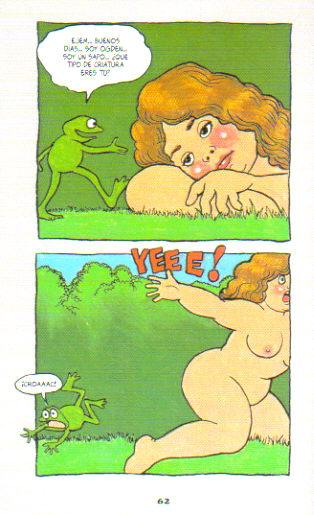
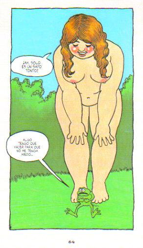

The programmer, like the poet...
The programmer, like the poet, works only slightly removed from pure thought-stuff. He builds his castles in the air, from air, creating by exertion of the imagination. Few media of creation are so flexible, so easy to polish and rework, so readily...
Alan Moore’s Writing for Comics
Fuente: Chris Boland
Si hiciéramos un repaso por la historia de los cómics y olvidáramos incluir a Alan Moore, estaríamos dejando de lado varios de los mejores cómics que se hayan escrito y publicado.
Algunos de sus títulos más reconocidos han...
¡Trabajadores del mundo, únanse!
Una de las figuras más influyentes en la historia, cuyo nombre todos los estudiantes de economía y filosofía identifican; más conocido como un comunista revolucionario que como un filósofo, y de quien sus obras inspiraron a muchos de los gobiernos...
Nietzsche
[…] Tampoco pareció inquietarse por la existencia inactiva, de muerte en vida, que se veía obligado a llevar. Viendo llorar un día a su hermana, dijo: “Lisbeth, ¿por qué lloras? ¿no somos felices?” Quizá lo era por primera vez.
— E. W. F. Tomlin
Yoshihiro Tatsumi y el Gekiga
Con una carrera que abarca desde la década de 1950 hasta nuestros días, Yoshihiro Tatsumi, recientemente fallecido en marzo del 2015 a los 79 años, fue un dibujante y mangaka a quien se le reconoce como el creador del término “gekiga”.

Fuente...
"The Arrival" de Shaun Tan
Cada año son miles de personas las que se mueven de sus lugares de origen para establecerse en otro sitio con la esperanza de tener mejores oportunidades económicas, sociales o de otro tipo.
En este contexto, The Arrival (2006) es un homenaje a la...
Espacios verdes y espacios de existencia
Se requieren espacios verdes para tener una mejor calidad de vida, para el descanso, para renovar la convivencia. No es necesario pagar por cada diversión que se tenga. Es humano vivir en lugares dignos y sanos, en los que uno se pueda desenvolver...
Do What You Love
And today in seemingly unobjectionable advice that’s actually terrible, vacuous, entitled, meaningless advice: “Do What You Love” is “the unofficial work mantra of our time… [a] secret handshake of the privileged and a worldview that disguises its...
Frases y fragmentos de lecturas más o menos recientes
I think we ought to read only the kind of books that wound and stab us. If the book we’re reading doesn’t wake us up with a blow on the head, what are we reading it for? So that it will make us happy, as you write? Good Lord, we would be happy precisely...
El gran libro Yum Yum




— Robert Crumb, El gran libro Yum Yum